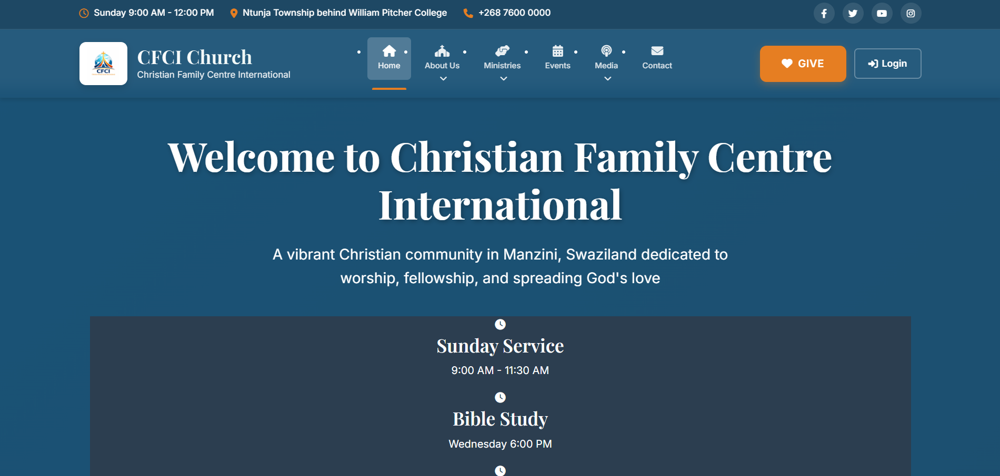
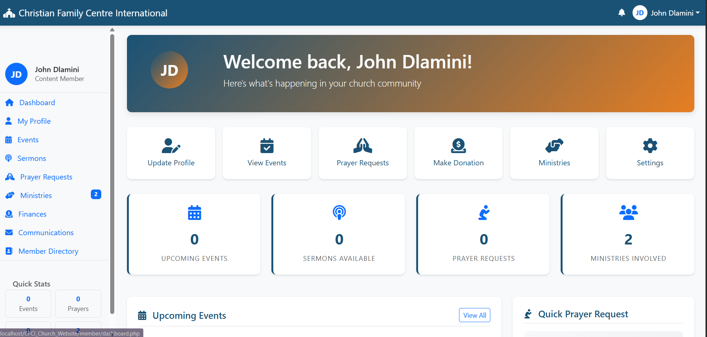
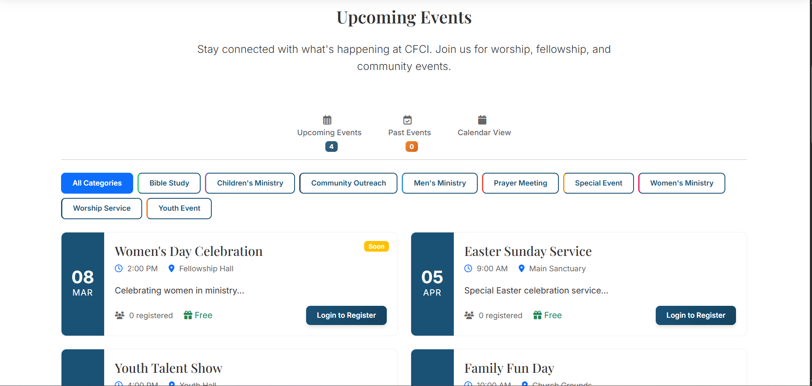
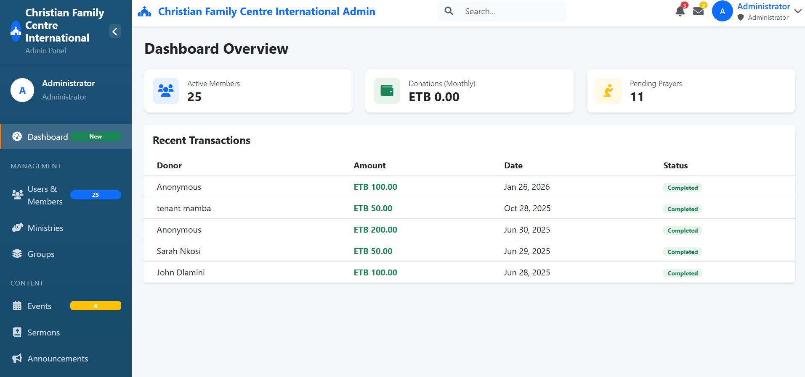

A comprehensive church management system with member portal, event management, donation system, and multi-role access control for Christ Fellowship Church International.
CFCI Church Website is a comprehensive church management system designed to serve Christ Fellowship Church International's digital needs. The platform provides multi-role access control, event management, donation processing, and member engagement tools in a unified system.
I was the sole developer responsible for the entire project lifecycle:
Conducted comprehensive analysis with church leadership to understand the needs of different user roles (Pastors, Members, Visitors) and identify key features for church management and member engagement.
Designed comprehensive user role system with four distinct access levels (Public, Member, Pastor, Admin) and planned permission-based content access.
Created normalized database schema with tables for members, events, donations, prayer requests, sermons, and user roles with proper relationships and constraints.
Built responsive user interfaces using HTML5, CSS3, JavaScript, and Bootstrap 5. Created separate dashboards for each user role with intuitive navigation.
Developed robust PHP backend with secure authentication, role-based access control, event management, donation processing, and member communication systems.
Integrated payment gateways, implemented security measures, and conducted thorough testing across all user roles and church management workflows.
The platform implements a sophisticated four-tier user role system with customized access and functionality for each role:
Access to public content, event information, sermon library, and contact forms without registration.
Member directory, event registration, prayer request submission, and personalized content access.
Member management, prayer request monitoring, event creation, and limited administrative functions.
Full system access, user management, content moderation, financial reporting, and system configuration.
Four distinct user roles (Public, Member, Pastor, Admin) with customized dashboards and role-based permissions.
Complete event lifecycle from creation to registration with automated reminders and attendance tracking.
Secure online donation processing with multiple payment methods and automated receipt generation.
Private prayer request submission with pastoral review and confidential response system.
Comprehensive media library with sermon recordings, notes, and searchable archives by topic and speaker.
Secure member directory with privacy controls, contact information, and family relationship tracking.
Designed and implemented a comprehensive MySQL database with 15+ interconnected tables:
Integrated multiple payment methods for donations and event registrations:
The platform implements a sophisticated four-tier architecture with role-based access control:
┌─────────────────┐ ┌──────────────────┐ ┌─────────────────┐ ┌─────────────────┐ │ ADMIN PANEL │ │ PASTOR PORTAL │ │ MEMBER DASHBOARD│ │ PUBLIC INTERFACE│ │ │ │ │ │ │ │ │ │ • User Management│ │ • Member Mgmt │ │ • Event Reg. │ │ • Event Info │ │ • System Config │ │ • Prayer Mgmt │ │ • Prayer Req. │ │ • Sermons │ │ • Financial Reports│ │ • Event Creation │ │ • Directory │ │ • Contact │ │ • Content Mod. │ │ • Limited Admin │ │ • Giving │ │ • About │ └─────────────────┘ └──────────────────┘ └─────────────────┘ └─────────────────┘



